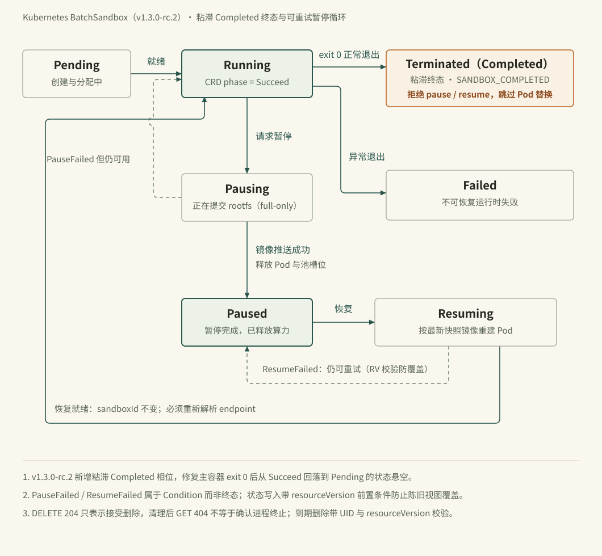
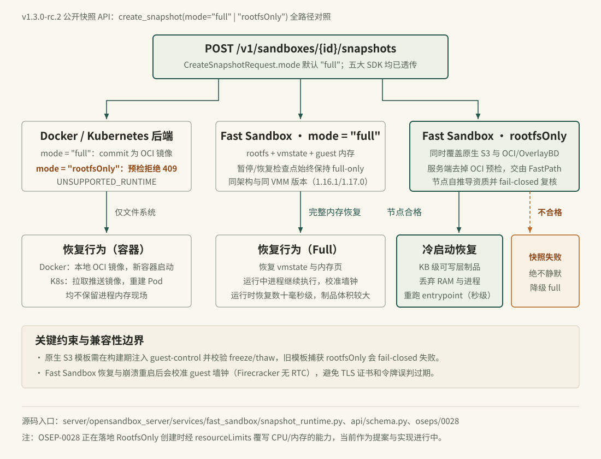

状态机：暂停、恢复、快照模式与绝对过期
沙箱平台的账单和事故常常在收尾和休眠阶段冒出来：一个沙箱跑完脚本正常退出，状态却掉回 Pending 一直占着坑位；用户想保存干净的文件系统起点，被迫连带导出几个 GB 的 guest 内存；或者客户端以为 renew(300) 是在原剩余寿命上加 5 分钟，结果把还剩半小时的沙箱活生生砍短成了 5 分钟。
OpenSandbox 把中后半段生命周期拆成了四块独立机制：绝对 TTL 过期、暂停与恢复、full 与 rootfsOnly 公开快照，以及访问驱动的续期与空闲暂停。
绝对 TTL 与三个容易踩的语义坑
创建请求里的 timeout 是绝对 TTL，不是空闲超时。到期时间固定为创建时间加上 timeout，服务端重启或沙箱暂停都不会重置它。
围绕过期时间有三条必须记牢的语义：
- 暂停不延寿。沙箱在
Paused态照常走表，不会因为反复暂停就永生。 - 续期可以缩短寿命。
POST /v1/sandboxes/{id}/renew-expiration接收绝对时间戳expiresAt，只要仍在未来，设得比当前值更早也会生效；而且server.max_sandbox_timeout_seconds只限制创建时的timeout，不约束后续续期。SDK 的renew(duration)计算的是now + duration而非current expiresAt + duration，只想延长不缩短的调用方必须先读当前到期时间再算。 - 竞态防线已补齐。
1.3.0-rc.2修复了两个静默丢工作区的并发竞态：Docker 后端把renew_expiration与过期清理串行在同一把每沙箱生命周期锁下，绝不再出现续期刚返200、旧定时器却删掉活容器的局面；Kubernetes 后端的到期删除带上对象 UID 与resourceVersion前置条件，陈旧 informer 副本无法误删刚续期的沙箱。
暂停/恢复与 BatchSandbox 粘滞 Completed
三种后端上，暂停与恢复的底层动作和算力释放截然不同：
| 维度 | Docker | Kubernetes 容器 | Fast Sandbox |
|---|---|---|---|
| 暂停动作 | 容器级 pause（先主容器后 sidecar） | commit rootfs 推 registry，释放 Pod 与池槽位 | 写 full 检查点落 store，释放 Fastlet |
| 恢复动作 | 容器级 unpause（先 sidecar 后主容器） | 模板改用快照镜像，重建 Pod | 任意合格 Fastlet 恢复检查点并校准墙钟 |
| 保留现场 | 内存与进程（冻结） | 仅 rootfs（QEMU 模式除外） | rootfs + vmstate + guest 内存 |
| 算力足迹 | 仍占宿主机内存 | 归零 | 归零 |
| 恢复后地址 | 不变 | 变化，需重查 endpoint | 变化（可能换节点），必须重查 endpoint |
| 限制 | 无副本限制 | 仅支持 spec.replicas = 1 |
pause/resume 检查点始终保持 full |
图 5 展示了 Kubernetes BatchSandbox 在 release-1.3.0-rc.2 的完整运行与暂停状态机：主容器以退出码 0 正常结束后，不再从 Succeed 退回 Pending，而是进入粘滞的 Completed 终态并映射为公开的 Terminated（reason = SANDBOX_COMPLETED），直接拒绝后续 pause/resume 意图；同时 PauseFailed 与 ResumeFailed 属于可重试条件而非终态，状态写入携带 resourceVersion 乐观锁防止被陈旧视图覆盖。

公开快照：full 与 rootfsOnly 的分道扬镳
暂停是平台内部为了释放算力、保留同一个 sandboxId 的连续性机制；公开快照（POST /v1/sandboxes/{id}/snapshots）则是产出可复用制品的公开能力，基于 READY 快照创建出来的永远是一个新的沙箱 ID。
在 release-1.3.0-rc.1 与 rc.2 中，五大 SDK 全部暴露了 create_snapshot(mode="full" | "rootfsOnly")（默认 full），把过去绑死在一起的两种快照需求彻底分开：

两条模式的核心差异与约束如下：
- Docker 与 Kubernetes 容器后端：只支持
mode="full"（分别产出本地 OCI 镜像与推送到 registry 的 OCI 镜像，仅含文件系统）；收到mode="rootfsOnly"在服务端预检阶段直接返回409 UNSUPPORTED_RUNTIME。其中 Docker 自1.2.1起允许直接对Paused状态的沙箱创建full快照。 - Fast Sandbox 的
full模式：捕获rootfs、vmstate、memory（经/dev/shm暂存）与SHA256SUMS清单，恢复时原地继续跑内存里的进程，要求宿主机安装与 manifest 精确匹配的 Firecracker 版本（1.16.1 / 1.17.0），恢复后自动校准 guest 墙钟。暂停与恢复内部检查点依然保持full-only。 - Fast Sandbox 的
rootfsOnly模式：产出 KB 级、丢弃 RAM 与进程的纯可写文件系统制品，恢复走显式create(snapshotId=...)冷启动并重跑entrypoint（恢复耗时从数十毫秒级变为秒级）。到1.3.0-rc.2为止，它已同时覆盖 OCI/OverlayBD 与原生 S3 模板：服务端移除了原有的 OCI 预检限制，把模式准入交由 FastPath 门禁（拒绝时不落库意图）和 Fastlet 节点 fail-closed 复核；节点捕获资质改为从托管 VMM 目录与 StateRoot 自动推导，不合格节点直接令快照失败，绝不静默产出full制品；但原生 S3 与 OCI 模板都必须经过新版构建器重建（强制注入 guest-control 并校验 freeze/thaw），老模板捕获会直接 fail-closed。
持久性红线同样没有模糊空间：对 Kubernetes 容器后端，只有内部或公开快照达到 Succeed 且镜像真实推到 registry 后 rootfs 才算持久，进行中的 Pending/Committing 不构成任何承诺；进程退出、OOM、Pod 驱逐或节点故障都不会自动触发快照；挂载卷的数据也不包含在 OCI rootfs 快照里；删除快照记录同样不会删除已经推送到仓库或对象存储里的底层制品，存储回收留给外部运维策略。
访问驱动的续期、空闲暂停与客户端池
为了弥补绝对 TTL 对长交互会话不够友好，控制面配了一对反向机制，共用「访问即信号」：
- 访问续期（OSEP-0009）：通过创建时的
lifecycle.renewalPolicy（或兼容期内的extensions["access.renew.extend.seconds"]）开启，经 ingress 或服务器代理的请求会节流发布renew-intent延长绝对过期时间。 - 空闲暂停（OSEP-0024）：创建时在
lifecycle.idlePolicy声明idleTimeoutSeconds、onIdle: "pause"与wakeOnAccess: true。server/opensandbox_server/integrations/idle_pause/通过activity、decision、locking、probe、sweeper和executor周期扫描并自动暂停空闲沙箱，下次访问到达网关时自动唤醒（同样要重新解析 endpoint）。探针携带OpenSandbox-Skip-Activity: skip避免重置自己测量的时钟。
在客户端侧，Python、JS、Kotlin、Go SDK 还提供实验性的客户端沙箱池（C# 暂缺）。它池化的是一组预热好的 Ready 沙箱 ID：单 leader 后台按 max_idle 补齐暖缓冲，任意节点调用 acquire() 弹出一个 ID 并续期后独占使用，没有 release()，用完直接销毁。要格外清楚 max_idle 管的是空闲缓冲池大小，不是并发使用上限，空池行为由 AcquirePolicy（如 DIRECT_CREATE 或 FAIL_FAST）决定；1.2.1 也补齐了 Python 优雅停池清理与 Go 池销毁失败围栏重试。
源码入口
| 路径 | 看什么 |
|---|---|
server/opensandbox_server/services/snapshot_service.py |
公开快照状态机、mode 持久化与双副本恢复扫描（999 行） |
server/opensandbox_server/services/fast_sandbox/snapshot_runtime.py |
FastPath rootfsOnly/full 提交与 S3/OCI 放行逻辑（497 行） |
server/opensandbox_server/integrations/renew_intent/consumer.py |
访问续期意图消费 |
server/opensandbox_server/integrations/idle_pause/decision.py |
空闲暂停判定逻辑 |
docs/guides/pause-resume.md |
暂停/恢复持久性边界、中断语义与后端对照 |
docs/guides/client-pool.md |
客户端沙箱池 leader 预热与 AcquirePolicy |